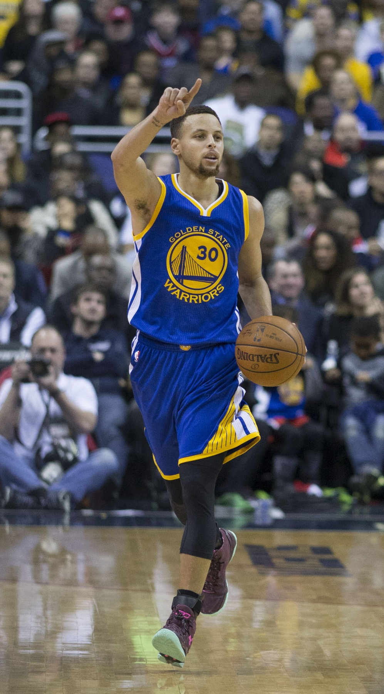
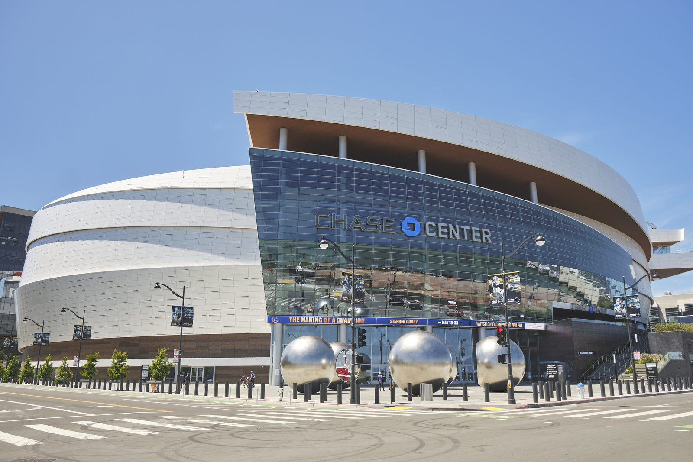

Steph Signed Through 2029, and Now I Want One More Parade
Two years, $116 million, and a pay cut he didn't have to take. The greatest thing that ever happened to Bay Area basketball just told us he's not going anywhere.

I saw it on my phone Saturday in the checkout line at Safeway, and I made a noise. Not a word. Just a noise. The lady behind me with the rotisserie chicken gave me a look, and I didn't care, because Stephen Curry had just agreed to a two year, $116 million extension with the Warriors that runs through the 2028-29 season.
He's staying. He's actually staying.
I know, I know. Everybody said he'd never leave. But I've been a Bay Area sports fan long enough to know that "he'd never leave" is exactly what we said about a lot of guys who left. I'm not going to name names. You know the names. So yeah, I was a little scared, and I'm not embarrassed to admit it.
He left money on the table. For us.
This is the part that got me. Steph was eligible for up to about $136.7 million over those two years. He signed for $116 million. That's roughly $20 million he looked at and said, nah, spend it on somebody who can help me win. The deal pays him $55.7 million in 2027-28 and $60.2 million in 2028-29, and that last year is a player option, which is exactly what a guy who's earned everything should get.
Curry said he wanted the team to have some flexibility "because we haven't had that in years past, the recent past." Read that twice. That's the franchise player telling the front office, politely, that he's tired of watching them work with no room to move, and then handing them roughly $10 million in extra projected cap space for next summer to fix it. Who does that? Name me another superstar who does that at 38.
Mike Dunleavy said there's never been a better face of a franchise in pro sports history, on and off the court. I'd usually roll my eyes at a GM quote. I can't roll my eyes at this one. He's right.

What it means to the Warriors
Let's be honest about where this team is, because I'm not going to pretend. Last season stunk. Steph played 43 games because of that right knee, missed 39, and we limped into the play-in and got run out of Phoenix 111 to 96. He shot 4 for 16 that night. I turned it off early in the fourth. Then I turned it back on, because of course I did, and then I turned it off again.
And it's not like the roster is healthy now either. Jimmy Butler tore his ACL and he's going to miss a big chunk of this season. Moses Moody ruptured his patellar tendon. Butler's $56.8 million and Draymond's $27.6 million both come off the books next summer. So you can see what the front office is looking at: a real window in the summer of 2027, with Steph locked in and cheaper than he had to be, and actual room to add somebody who matters.
That's the whole plan now. Don't waste it, Dunleavy. I'm begging you. Every summer we've had a reason why we couldn't make the big move, and the reason was usually money. Steph just took the money excuse off the table personally.
When he was healthy last year he still put up 26.6 a night. At 37. On one good knee for half of it. He says he feels healthy going into camp, and I believe him, mostly because I need to.
What it means to the Bay
I've been trying to explain this to my cousin in Sacramento, who doesn't get it. Steph isn't a basketball player to us. He's the guy who turned a franchise that used to be a punchline into the thing everybody in the country wanted to copy. I remember going to games in Oakland when the building was loud because the fans were stubborn, not because the team was good. Then this skinny kid from Davidson showed up in 2009 and changed everything.
Four championships. Two MVPs. The all time leader in threes, and not by a little. The first player in league history to make more than $600 million on the court. And he did all of it here, for one team, in one place. Kids in Richmond and San Jose and Fremont shoot from the logo on their driveway hoops because of him. My nephew does it and he misses every time and he doesn't care, he just yells "Curry!" and runs back on defense. Well, he doesn't run back. He's eight.
If Steph plays out this deal, 2028-29 is his 20th season, all of them with Golden State. Only three guys in NBA history have played 20 seasons with one franchise: Dirk Nowitzki, Kobe Bryant and Udonis Haslem. Steph would be the fourth. In an era where stars switch teams like they're switching phone plans, our guy is going to retire in the same jersey he was drafted in. We don't get that around here very often. Treasure it.

One more. Please.
This is where I get greedy. The last title was 2022, in Boston, and I still remember exactly where I was sitting on my couch when the clock hit zero. I thought we'd get another one right away. We didn't. We got a lot of "not this year" instead, and a lot of summers where we had nothing to spend.
Now we've got three seasons left with the best shooter who ever lived, a front office with room to finally swing, and a guy who just proved he cares more about winning than about the last $20 million. If that's not enough to get one more banner up at Chase Center, I don't know what is.
I'm not asking for a dynasty. I'm asking for one more June. One more ride down Market Street. One more night where Steph's standing on a car with a trophy and the whole Bay is losing its mind together.
He did his part Saturday. Your move, Warriors.
More coverage: Warriors · NBA · Bay Area Sports Blog home